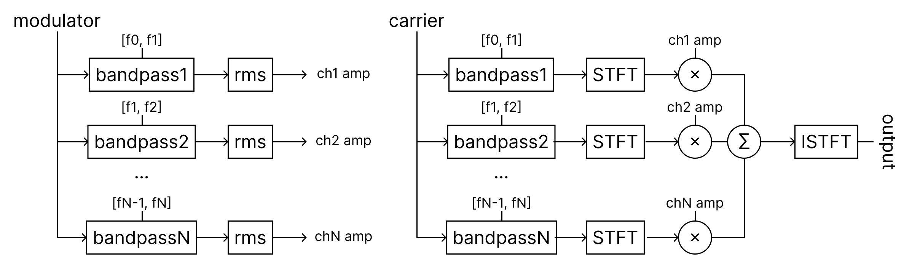
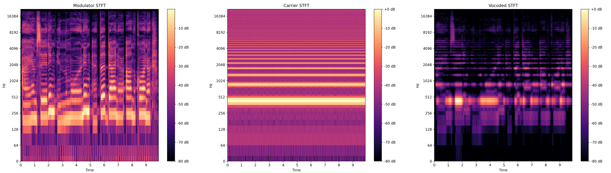

Demo for the final project of GCT535 Spring 2022 Sound Technology for Multimedia, KAIST.
We constructed our own Vocoder Effect and related parameters to mimick several iconic vocoder-effected vocal tracks which are Daftpunk, Zedd and Stevie Wonder.
-
First, we implemented a classic channel vocoder using band-pass filters and RMS filters.
-
Second, we implemented and compared controllable parameters including F0, Number of Frequency Bands, Frequency Scale, Random Noising, Formant Shifting and Beta between modulator and carrier. We also implemented compressor and expander to improve the effector sound.
-
Finally, we mimicked the target artists using our implemented vocoder and its parameters. We also generated interesting results with various types of carrier sounds.
You can check implementation detail and result samples below.
Vocoder Implementation
 Figure.1 Implementation of Vocoder
A vocoder takes two different signals, carrier $car$ and modulator $mod$, as inputs and outputs one result signal $output$. Let the number of frequency bands $N$, the number of time samples $T$.
Each bandpass filter $bandpass_i, i\in [1, N]$ corresponding to a single frequency band has passband $[f_{i-1}, f_i]$. The output signal is retrieved as the following:
\(output_t=ISTFT(\Sigma_{i\in [1, N]}{RMS(bandpass_i(mod_t))\times bandpass_i(STFT(car_t))}), t\in[0, T]\).
RMS and STFT are calculated in the same hop length.
As a result, we can retrieve a modified carrier signal that has the same envelope as the modulator signal in the frequency domain over time which reflects the formant characteristics of the modulator.
 Figure.2 Comparison between original STFT and vocoded STFT
Result Samples
| Modulator | Carrier | Vocoded Result |
|---|---|---|
Controllable Parameters
-
The fundamental frequency, often referred to simply as F0, is the lowest frequency of a periodic signal. In music, the pitch is the fundamental frequency of a note. Since the carrier sound is solely in charge of the harmonic, the result’s pitch is controlled by the F0 value of the carrier signal.
f0=220 f0=440 f0=880 -
F Bands refers to the number of frequency bands into which the modulator signal is split. The larger number of F Bands means the smaller range of band-pass filters, vice versa. You can think of this number as a resolution of the modulator’s formant. Check the samples focusing on the formant(vowels) resolution.
band_num=10 band_num=60 band_num=120 -
Different Scales, such as linear or mel(log), can be applied on frequency axis when dividing equal-width Frequency Bands. It determines the range of each frequency band, which is important to human pitch perception and formant shift.
Linear Scale Mel Scale -
To highlight sibilant sounds (e.g. s, sh, t, ch, chh, etc.), high-frequency Noise can be added to the carrier signal. As these sounds do not have a particular pitch, adding frequency components around 8kHz to 16kHz may help them to stand out.
For implementation, we generated a random white noise and applied a bi-quad high-pass filter. amp is the amplitude of the noise. Q is the Q value of the bi-quad filter.without Noise amp=0.5, Q=1 amp=0.7, Q=3 -
Formant-shifting is achieved by shifting the multiplication between the frequency band channels from modulator and carrier. If the shift step is 1, the modulator channel n would be mapped to the carrier channel n+1. Note that formant does not relate to the pitch or frequency of the signal, but rather the timbre and spectrum peaks. Each formant corresponds to a resonance in the vocal tract and is prominent in vowels.
shift=0 shift=-1 shift=2 -
Compressor attenuates the given sound above threshold (dB) with a certain ratio (>1) while maintaining the maximum amplitude level (dB). It reduces the dynamic range without clipping.
Applying the effector before vocoder softens the dynamic change in formant.without Compressor with Compressor -
Expander, in contrast to compressor, attenuates the given sound below threshold (dB) with a certain ratio (>1). It can reduce unnecessary noise.
without Expander with Expander -
Beta refers to the non-linear alternation of modulator signal as follows: ${modulator}^{beta} * carrier$ This parameter was devised to control the artifact of modulator signal.
ratio=0.3 ratio=0.7 ratio=1.2
Various Carrier Samples
We applied various types of carrier sounds to the two modulator, suzanne and dog sound. Check the below samples focusing on how the sound is modulated following the carrier’s texture or harmonic structure.
1. Suzanne
| Carrier | Vocoded Result | |
|---|---|---|
| Incremental Sawtooth | ||
| Orchestra | ||
| Pad Chord | ||
| Wind |
2. Dog Sound
| Carrier | Vocoded Result | |
|---|---|---|
| Incremental Sawtooth | ||
| Harp | ||
| School Bell | ||
| Synth | ||
| Whale | ||
| Meow | ||
| Starwars | ||
| Trumpet |
Let’s Mimick Some Artists!
We used sawtooth signals with static or dynamic fundamental frequency over time as a carrier sound. By manipulating the controllable parameters of the vocoder, we finally got the resulting sound tracks.
1. Daftpunk - Harder, Better, Faster, Stronger
 |
Target | |
| Our Voice | ||
| Mimicked Result |
2. Zedd - Stay
| Target | ||
| Our Voice | ||
| Mimicked Result |
3. Stevie Wonder - Close to you
| Target | ||
| Our Voice | ||
| Mimicked Result |